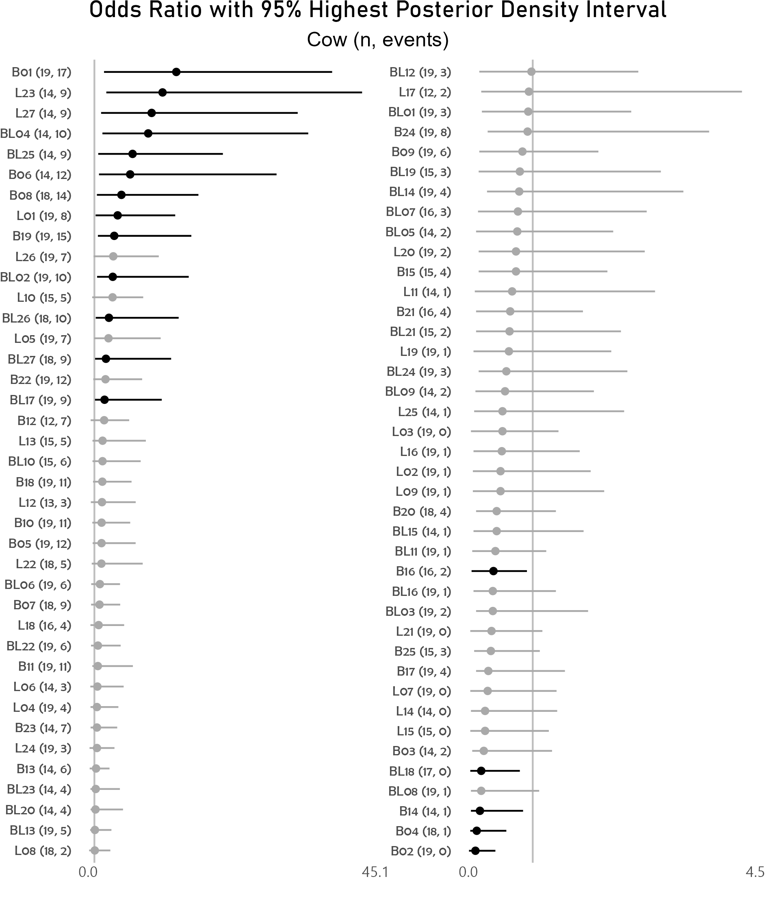

3.4 Bayesian hierarchical model
Below runs a logistic MCMCglmm model treating cow and yard as random effects for 800 posterior samples. Should specify burnin=125000, nitt=625000 and thin=100 for 5000 posterior samples with lower autocorrelation. Aim for effective sample sizes of at least 2000.
model1 <- MCMCglmm(HP ~ Diet + Time, random=~Cow + Yard, family="categorical", data=Milk, saveX=TRUE, verbose=F, burnin=2000, nitt=10000, thin=10, pr=TRUE, prior=prior2RE);
#autocorr.diag(model1$VCV); #use this to choose thinning interval, autocorrelation less than 0.01 ideally;
mcmcglmm_mva <- nice_mcmcglmm(model1, Milk);
options(knitr.kable.NA = '');
knitr::kable(mcmcglmm_mva);| Variable | Levels | OR (95% HPDI) | MCMCp | eff.samp |
|---|---|---|---|---|
| Diet | barley | reference | ||
| barley+lupins | 0.36 (0.17, 0.78) | 0.010 | 704.06 | |
| lupins | 0.19 (0.08, 0.47) | 0.001 | 441.32 | |
| Time | 0.96 (0.93, 0.99) | 0.007 | 233.31 |
Random effects ICC and 95% highest posterior density interval:
| ICC | lower | upper | |
|---|---|---|---|
| Cow | 0.6343 | 0.5130 | 0.7554 |
| Yard | 0.0028 | 0.0007 | 0.0980 |
| units | 0.3175 | 0.2367 | 0.4589 |
R-squared calculation with 95% credible intervals for marginal model - considers only the variance of the fixed effects (without the random effects):
| R_Squared | lower | upper | |
|---|---|---|---|
| 0.1538995 | 0.0421643 | 0.2661703 |
R-squared calculation with 95% credible intervals for conditional model - takes both the fixed and random effects into account:
| R_Squared | lower | upper | |
|---|---|---|---|
| 0.7043503 | 0.6252562 | 0.8051031 |
3.4.2 Caterpillar plot for random effect of cow
Odds ratio of high protein milk among cows is below. Highest posterior density intervals are not necessarily symmetric, but should be close to symmetric upon running more model iterations. Note that cows L23 and L27 have a higher odds estimate for high protein milk in random effect, even though those cows were fed a diet of lupins and should in theory have lower protein milk. Cow B01 also has higher odds of high protein milk, but was always fed a better diet (barley).
